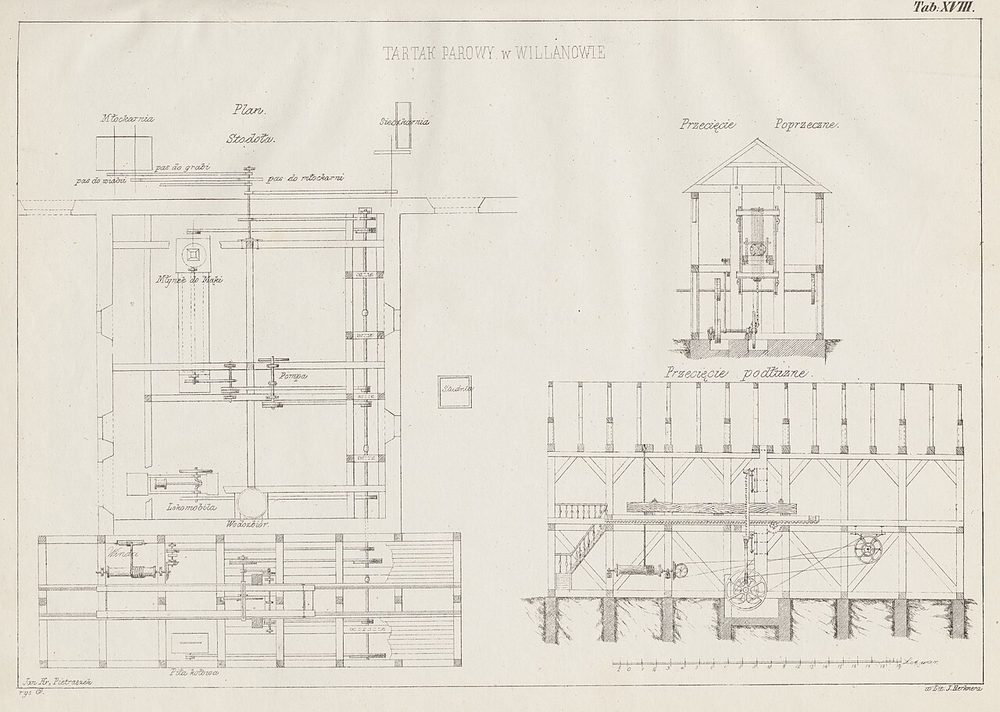

Dobra, Porąbka, Półrzeczki · 1883–1901 · histoire inédite tirée des registres
Le chemin de fer et la scierie à vapeur
De 1882 à 1884, on a construit à travers Dobra le chemin de fer transversal de Galicie. Des gens de toute la monarchie sont venus dans la paroisse, et les registres ont gardé leurs traces.
Texte traduit de l’original polonais avec l’aide de Claude. Je cite les registres dans leur langue d’origine, avec une traduction.
De 1882 à 1884, les chemins de fer de l’État autrichien ont construit le chemin de fer transversal de Galicie (la Galicie était alors une province autrichienne). De Chabówka à Nowy Sącz, la voie a été tracée par Mszana Dolna, Kasina Wielka, Dobra et Limanowa, et la ligne a été ouverte en décembre 1884. Des gens de toute la monarchie sont venus dans la paroisse pour le chantier, et les registres ont gardé leurs traces.
Des bâtisseurs venus de loin
En août 1883, on a baptisé à Dobra le fils de Fryderyk Lorenz, d’une famille de cheminots, dont la mère était originaire du Mecklembourg, en Prusse. Parmi les parrains et marraines se trouvaient des nouveaux venus du Tyrol, d’Italie et de Spiš.
En septembre 1884 est né Karol Ludwik, fils de Dionizy Mazzoran, tailleur de pierre de la paroisse de Tambre, dans la province de Belluno, en Italie, et de Joanna, née Rinaldi. Le parrain et la marraine étaient eux aussi italiens. À cette époque, des tailleurs de pierre du nord de l’Italie construisaient des ponts et des ponceaux dans toute la monarchie.
Extrait du registre des baptêmes de Dobra, 27 septembre 1884
Dionisius Mazzoran lapicida filius legit. Valentini et Angellae Bona, oriundus e parochia Tambre provinciae Bellunensis in Italia
Dionizy Mazzoran, tailleur de pierre, fils légitime de Walenty et d’Angela, née Bona, originaire de la paroisse de Tambre, dans la province de Belluno, en Italie.
Dobra, baptêmes 1866–1909 · cote 4268/3545 · scan 052 · voir le scan ↗
Le chantier a aussi eu son prix. En juillet 1884, Emilia Hampel, 43 ans, de Banská Bystrica en Hongrie, femme de Wacław, surveillant des ouvriers du chemin de fer, est morte après un accouchement. Sa fille était née morte la veille. La même année, des épouses et des filles d’ouvriers du chemin de fer, venus de Ryczów près de Wadowice et de Kamienna dans la paroisse de Trzciana, sont mortes de pneumonie. En mai 1885, Karol, trois ans, fils de Melchior Metzger, architecte du chemin de fer, né à Halász en Hongrie, est mort de la diphtérie.
Des mariages sur le chantier
Le 2 février 1885, à Porąbka, Cesare Gasperi, 25 ans, surveillant des ouvriers du chemin de fer, originaire de Lavarone au Tyrol, a épousé Kunegunda Kalita, seize ans, fille de Jan, laboureur, et de Helena, née Podgórny. Les témoins étaient deux architectes, Izydor Foramitti et Alojzy Ganz. Le père de la mariée a inscrit son consentement dans le registre, en polonais.
Extrait du registre des mariages de la paroisse de Dobra, copie annuelle de 1885
Ja niżej podpisany ojciec małoletniej córki mojej Kunegundy na śluby małżeńskie z Caesarem Gasperi zezwoliłem, które to śluby w przytomności mojej zawarte zostały, na co się jako nie umiejący pisać […] znakiem krzyża św. podpisuję. + Jan Kalita ojciec
Je soussigné, père de ma fille mineure Kunegunda, ai consenti à son mariage avec Caesar Gasperi, lequel mariage a été contracté en ma présence ; en foi de quoi, ne sachant pas écrire […], je signe du signe de la sainte croix. + Jan Kalita, père
Dobra, copies annuelles 1885 · cote 3402/1885 · scan 008 · voir le scan ↗
Dix jours plus tard, à Dobra, se sont mariés Józef Janota, 30 ans, chef de chantier à la construction du chemin de fer, originaire de Lomnitz en Bohême, et Maria Koblížek, elle aussi de Bohême. Ils étaient proches parents, et il leur a donc fallu une dispense de la nonciature apostolique de Vienne. Le témoin était l’organiste Kazimierz Mendalski.
Le chemin de fer reste
Après le chantier, des cheminots sont restés le long de la voie. En 1890, le garde-voie était Józef Kalita, fils de paysan. En 1893, le chef de gare de Dobra était Izaak Bier ; l’histoire « Des voisins de confession mosaïque » parle de son fils.
Avec le chemin de fer sont arrivées les machines à vapeur. De 1890 à 1892 vivait à Półrzeczki Aleksander Maliszewski, « ductor machinae igneae ad secturam ligni », conducteur d’une scie à vapeur pour débiter le bois. En 1901, à Dobra, le registre mentionne Wojciech Pyka, chargé d’une machine à vapeur. Le bois des forêts des Beskides pouvait désormais être scié sur place et expédié par le train.

Degré de certitude
- CertainLes professions, origines et dates des personnes citées. Lectures comparées aux scans.
- ProbableLa date d’ouverture de la ligne, décembre 1884. Elle est donnée par les sources sur le chemin de fer.
- À vérifierL’orthographe d’une partie des noms de personnes et de lieux étrangers, par exemple Mazzoran, Koblížek et les lieux d’origine des parrains et marraines de 1883.
Ce que nous ne savons pas
- Combien d’ouvriers ont travaillé sur le chantier et combien d’entre eux étaient du pays.
- Si Cesare Gasperi et Kunegunda sont restés dans la paroisse ou sont partis plus loin avec le chemin de fer.
Sources
- Registres des baptêmes de Dobra, cote 4268/3545 (scans 048, 052, 053, 082, 106, 108) ; copies annuelles 1884 et 1885, cotes 3402/1884 et 3402/1885 ; registres des mariages de Dobra, cote 4268/4520 (scan 042) ; baptêmes de Półrzeczki, cote 4269/3520 ; sur le site Metryki de la Société généalogique polonaise (PTG).
- Sur la construction du chemin de fer : Wikipédia, Radio Kraków.